Center
Wordpress Theme Documentation
Thank you for purchasing our theme. If you have any questions that are beyond the scope of this help file, please feel free to publish your question here.
Thanks so much!
- Install The Theme
- Update The Theme
- How do I set up the homepage?
- Upload my logo image
- Set up the AD area for pages/posts
Installation
To use a WordPress theme you must have a working version of Wordpress already installed. For information in regard to installing the WordPress platform, please refer to the WordPress Codex here
- Extract the package file
- Center folder - main theme folder
- Center.zip - zipped theme
- Documentation folder - help file
- Log folder
- Center-child.zip - zipped child theme
- Install theme file
- Using the Envato WordPress Toolkit plugin:
Please refer this post.
Note: How to get the API Key of themeforest(new version)? Refer this post. - Using WordPress Theme Upload:
Be sure to extract the file "Center.zip" from the ThemeForest download before uploading. Using the ThemeForest ZIP file directly will result in a "Missing Style Sheet" error.- Login to your WordPress admin.
- In the "Appearance > Themes" menu click the tab "Install Themes".
- At the top of the page click, "Upload", then click the file input to select a file.
- Select the zipped theme file, "Center.zip", and click "Install Now".
- After installation you will receive a success message confirming your new install.
- Click the link "Activate".
- Using FTP:
- Login to your FTP server and navigate to your WordPress themes directory.
- Normally this would be "wp-content/themes".
- Extract folder "Center" from the zipped theme.
- Copy the folder "Center" to your themes directory.
- After the files finish uploading, login to your WordPress admin.
- In the "Appearance" menu click "Themes".
- Click "Activate" for the theme "Center Responsive Retina Ready Multi-Purpose WP Theme".
- Theme update
- Using the Envato WordPress Toolkit plugin:
Please refer this post.
- Using WordPress Theme Upload:
- Remove the installed Minds theme
- Install the theme again(upload the latest Minds.zip)
- Using FTP:
- Unzip Minds.zip, get minds folder
- Upload/replace minds folder by ftp
After extract the main zip file, you'll see these folders and files:
This template works well for WordPress 4.1, update yours if needed.
Installing the theme can be done in two ways. You can upload the theme ZIP file using the built in WordPress theme upload, or copy the files through an FTP client.
Please download the theme file from themeforest.net
Setting Up
1. Recommended Plugins
After activating the theme, you would notice the message box on the top of admin pages to ask you install/activate some plugins, you could use them for free or cancel the messages.
2. Logo
Set up logo:
- Go to the WordPress Admin Dashboard.
- Click on the left sidebar item named "Center" to open the ThemeOptions panel.
- Go to ThemeOptions > General Settings > Logo section, here you could upload a logo image or input logo text.
The logo size recommended smaller than 160px(width) * 60px(hight), if you want to the logo is displayed clearly in retina screen, please upload a double size image logo(e.g. 320 x 120).
3. Navigation
Set up navigation layout:
- Go to the WordPress Admin Dashboard.
- Click on the left sidebar item named "Center" to open the ThemeOptions panel.
- Go to ThemeOptions > Layout > Header > Layout options and choose a layout.
4. Footer
Set up footer layout:
- Go to the WordPress Admin Dashboard.
- Click on the left sidebar item named "Center" to open the ThemeOptions panel.
- Go to ThemeOptions > Layout > Footer section.
5. Skin
10 predefined colour scheme for your website, pleas go to ThemeOptions > Styling
There are many detail colour setting options for every scheme, you could define your own style base on the given scheme setting. You could also click on the small icon "?" on the right side description for every item to learn detail explanation for the option.
6. Frontpage
To set up the homepage, you need to create a page which you want to use it as homepage, after that, go to ThemeOptions > FrontPage section to select the page from drop-down menu.
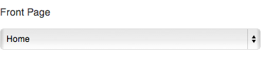
7. Generate New Thumbs for This Theme
If there have been some images in your site already, please click the button. It will generate the right size thumbs for the images.
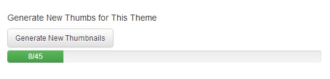
8. Menu
Before building your custom menu, you need to create your pages first, then navigate to Appearance > Menus, it is recommended to create you menu from Pages or Links.
Anchor: You could link a menu item to a particular section in a page, and this feature makes it possible to build an one-page website. Following is how to use Anchor:
- Build the target page and edit the content with PageBuilder (important). Use the fullwidth wrap for section of one page. Enter the archor name in Fullwidth wrap(check Fullwidth wrap section)
- In menu panel, eelect the page and click the "Add to menu" button, there is the meun item shown in right column.
- Edit the menu item in right column, select a archor name in archer selector.
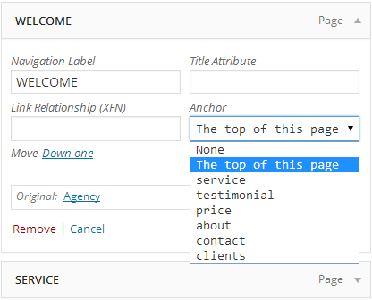 - Add the same page to a new menu item, select anoter archor.
- Save Menu.
Adding Content
7 Post Formats
Center provide 7 formats for your post, theses formats would affect the style of your post in list and content page.
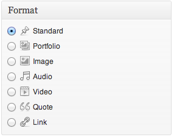
5 Post Types
The content for post types could be presented to web pages with Page Builder
1. Team
You could add/manage your team members with the Team type post.
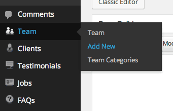
To add a new team member, please go to Team > Add New
To show the team members on webpage, you need to use the "Team" module from Page Builder:
- Add at least 1 team member, assign a team category and upload a featured image(photo, required) for every team member.
- Create a page and enable the Page Builder.
- Insert a “Team” module to the page.
- Edit the “Team” module, choose a team category you want to show in page.
2. Clients
You could add/manage your client information with the Clients type post with the similar interactions to Team.
To add a new client, please go to Client > Add New
Upload the client’s logo image to Featured Image.
Show clients logo on webpage:
- Add several clients you want to show, and set a client category for every client.
- Create a page and enable the Page Builder.
- Insert a “Client” module to the page.
- Edit the “Client” module, choose a client category you want to show in page
3. Testimonials
You could add/manage your testimonials information with the Testimonials type post with the similar interactions to Team.
To add a new testimonial, please go to Testimonials > Add New
Show testimonials on webpage:
- Add at least one testimonial you want to show, and set a testimonial category for every item.
- Create a page and enable the Page Builder.
- Insert a “Testimonials” module to the page.
- Edit the “Testimonials” module, choose a client category you want to show in page
4. Jobs
You could add/manage your opening positions with the Jobs type post.
To add a new position, please go to Jobs > Add New
Show jobs on webpage:
- Add at least one job post, and set a category for every item.
- Create a page and enable the Page Builder.
- Insert a “Jobs” module to the page.
- Edit the “Jobs” module, choose a client category you want to show in page
5. FAQs
You could add/manage your frequently asked questions with the FAQs type post.
To add a new question, please go to FAQs > Add New
Show your FAQs on webpage:
- Add at least one question post, and set a category for every item.
- Create a page and enable the Page Builder.
- Insert a “FQAs” module to the page.
- Edit the “FQAs” module, choose a client category you want to show in page
Slider Template
The Slide template is a big feature of Center. The option "Enable Slide Page Template" should be activated in page.
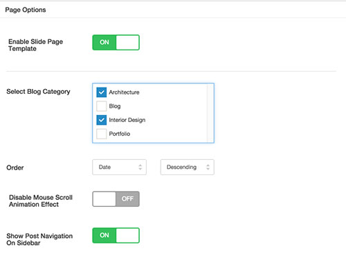Work With Page Builder
Center provide drag & drop page builder for your pages and posts, press the button "Switch to Page Builder" to enable it. Following is a brief introduction for the page builder:
1. Wraps
The modules could be placed directly into the panel or be dragged into a wrap, depending on your layout. A standard wrap have the same width with page content.
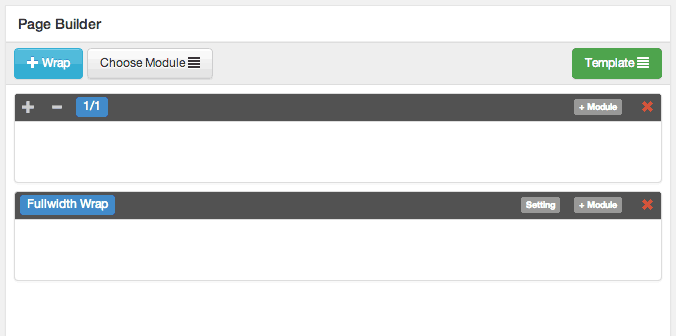
Fullwidth Wrap
A fullwidth wrap have the following features:
- A wider width than the page content, such as to be full-width to outer container, it could be used for your full-width sections.
- Support background color/image/video, IE 8/9 and touch devices do not support the video background, you need to upload a Atl Image for them.
- Parallax effect for image background/Foreground, the effect do not support touch devices.
- Support tabs.
- If you set the dark background color, please active the "Shift Text Color for Dark Background", the font color of this fullwidth wrap is set as white forcibly.
- If you want the content of fullwith wrap filled to full width of screen(no left/right padding), please active the "Fit Content to Fullwidth".
- One page:
The onepage layout is composed by the Fullwidth wrap. Set a archor name(Fullwidth Wrap / Setting / Advanced Settings / Anchor Name) for each fullwidth wrap. You'll select the archor name in menu editing panle.
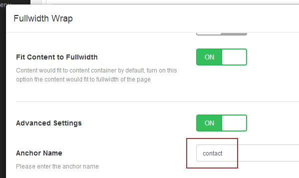Note: please use lowercase letters, do not use spaces and other characters.
Each section could be set in one Fullwidth wrap.
{kind=link}
{kind=link}
2. Modules
- Text Block
You could set up a background color for the text block, leave it empty if you don't want to show any background color.
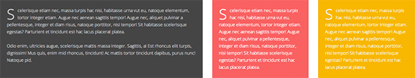
- Icon Box
Icon on Left
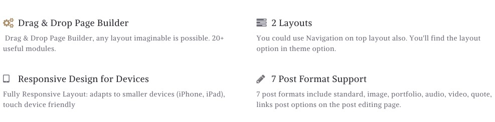
Icon on Top
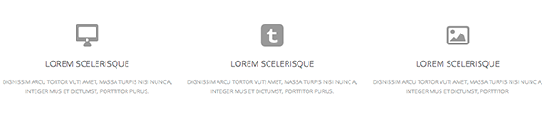
- Image Box
- Text List
You could set a bullet icon for every item
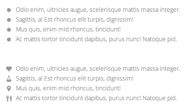
- Button
You could create a button and customise the size and colour.
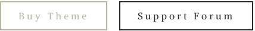
- Portfolio
Portfolio module is designed for you to showcase your portfolio post, on flip mouseover effect, the portfolio images could be previewed when mouse rollover.
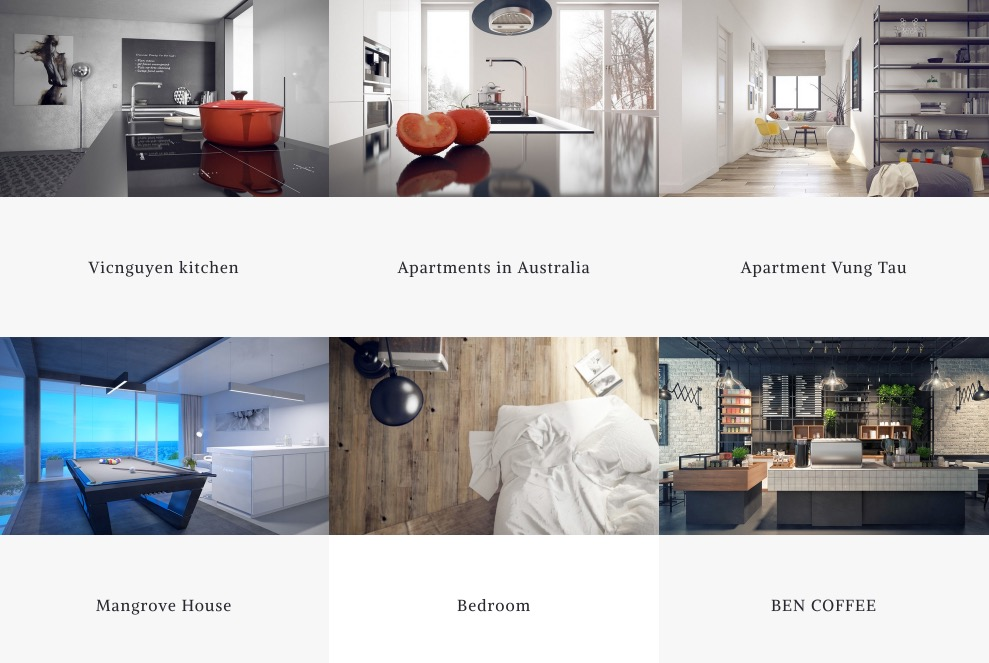
- Gallery
Gallery is a image list to show a gallery from image post (featured image) or a set of library images, click the image it would open a beautiful light-box or go to a particular link.
- Single Image
Single Image module is to enter a single image to your post/page.
- Message Box
This module could create 4 types of message box: Success, Warning, Error, Information
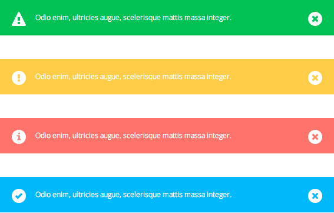
- Accordion / Toggle
Accordion and Toggle has the same style in front end, you could expand only one item in Accordion mode and could expand multiple items in Toggle mode.
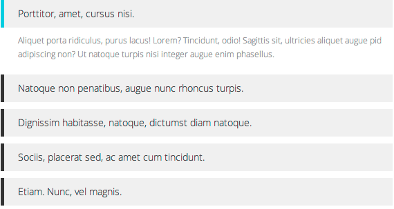
- Tabs
Horizontal Tabs
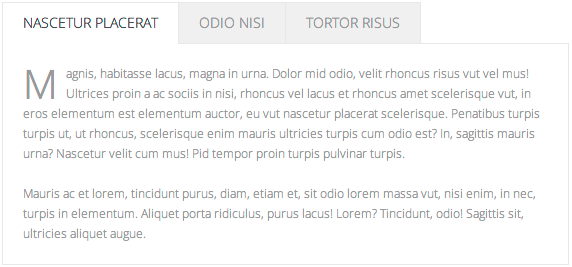
Vertical Tabs
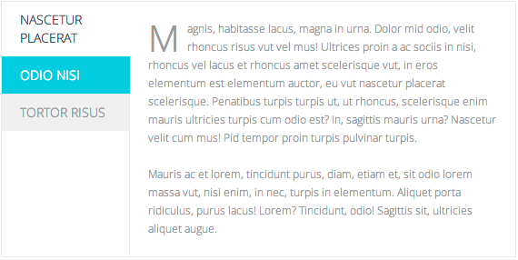
- Testimonial
To show a testimonial module in page, you need to create testimonials from the left hand navigation: Testimonial > Add New, and assign every testimonial post a category, then when build the module, choose the category you want to use.

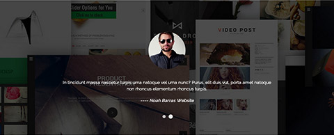
- Blog
The Blog module could display the blogs in all format.
- Client
The usage is similar with Testimonial module
- Divider
Divider module is to place a spacer or lines in the vertical dimension.
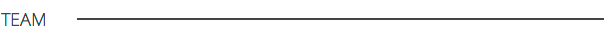
- Team
The Team Meta information would be hidden on mobile mode
- Jobs
The usage is similar with Testimonial module
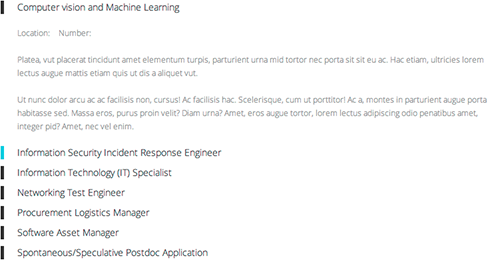
- FAQ
The usage is similar with Testimonial module, and have a same style with jobs.
- Contact Form
Center support the famous plugin "Contact Form 7", once you install it to your WordPress, the Contact Form 7 option would appear in the Form Type drop-down menu. Following image is the standard Contact Form module looks like in front end.
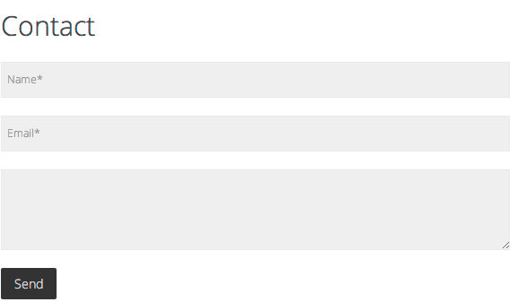
- Video
To enter a video to the page, you need to copy and paste the embeded code of the video, a example with Vimeo video:
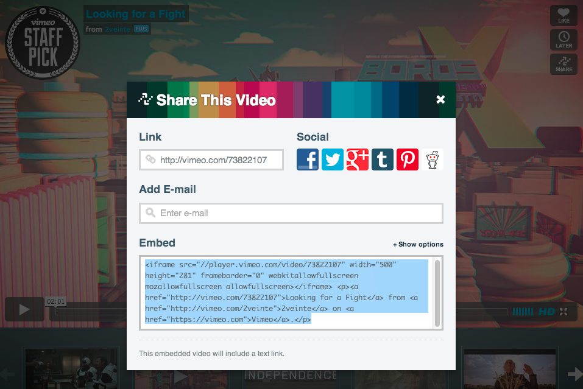
Supported video:
- Vimeo
- Youtube
- and other embeded videos from video sites
For Vimeo and Youtube video, you could directly copy/paste the link of the video:
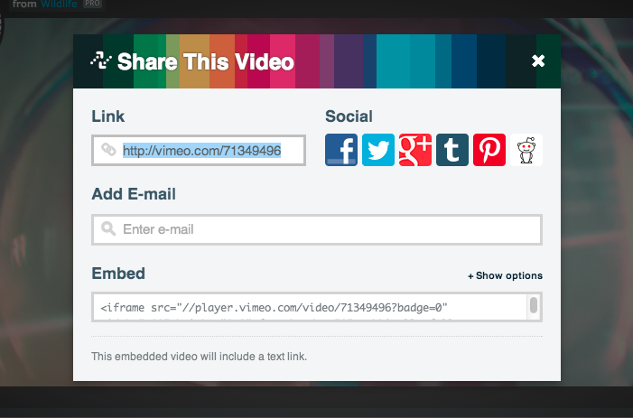
- Promote
It is a section to place a slogan or other words with a mouseover background color and link.
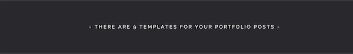
- Google Map
The Google Map module need you provide the name of your location.
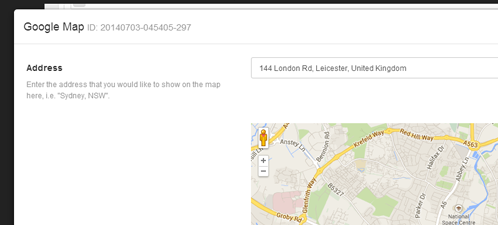
If you want to use Google Map Style, please go to this page to edit the map style.
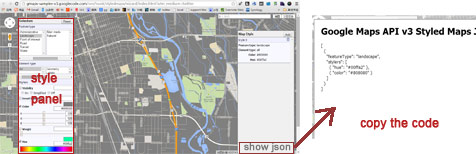
- Price
Build your price block by Price module, by now it support not more than 4 price blocks, and it is recommended to make the module fullwidth(1/1).
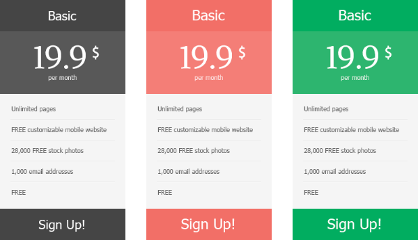
- Slider
It is supported Layerslider, Slider Revolution Content slider and Flexslider.
The Layerslider and Slider Revolution are commercial plugins, you could buy it on Codecanyon.
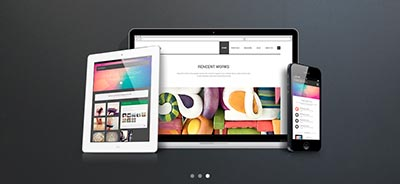
- Infographic
Progress bar:
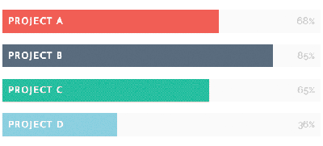
Pictorial:
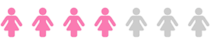
Pie:

Column:
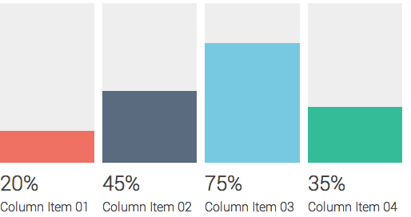
Big Number:
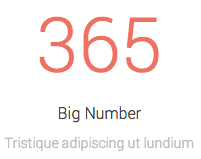
- Carousel
The carousel module support the list be horizontal scrolled
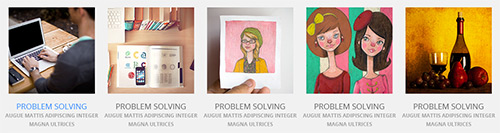
- Count Down
The Count Down module allow you assign a deadline and to create a timer automatically on front-end.
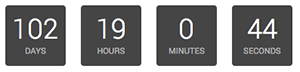
3. Save and Load templates
Once you have build a layout via the page builder, and you want to clone them to other page/posts, you could save the current layout to a template and load then in the other page/post page builder section.
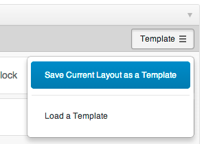
Build a One Page Site
The OnePage site including a page with several sections and a menu for this page at least.
1. Create a page with Page Builder, and seperate the content into several sections with Fullwidth Wrap
2. Give a Anchor name for every section:
- Open the Fullwidth Wrap editing panel
- Turn on Advanced Settings
- Enter a name for this section and save
3. Create a menu and link menu items to the page sections:
- Go to Appearance > Menus, choose a menu or edit the current menu
- Choose the page from left Page panel and Add to Menu
- In Menu Structure panel on the right, edit the menu item, choose a anchor for the item. All the sections you have named would be listed in the Anchor drop-down menu. Redo this step for the others menu items
- You could also create a menu item link to other page
{kind=link}
Short Code
When you edit the text via a text editor, you could use Short Code to add some advanced elements to your page/post:
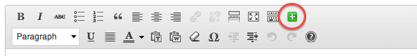
Following are the short-code elements this theme support:
- 1. Button
- 2. Line
- 3. Title
- 4. Highlight
- 5. Blank
- 6. Image
- 7. Gallery
- 8. Dropcap
- 9. Columns
- 10. Fixed Width Columns
- 11. Icon
- 12. Text
- 13. Text List
Translation
Center is translatable and multi-language ready, it is recommend to use the popular WPML wp plugin.
To translate the copyright information on footer, emails and address on hidden bar, please:
- Install the plugin WPML String Translation.
- Go to left menu: WPML/String translation
- Find the following string:
- Click on the “translations” on the right side of every string item, enter the target translated words, check on “Translation is complete" and save it.
[ux_theme_option]theme_option_copyright
[ux_theme_option]theme_option_hidden_bar_email
[ux_theme_option]theme_option_hidden_bar_phone
[ux_theme_option]theme_option_hidden_bar_address
To translate the static strings, it is recommended to download PO Edit here. After installing the PO Edit please follow the following steps:
- Open the /Center/languages/ folder and duplicate the default.po file, then rename it to your desired language code. For example, for German you need to rename it as de_DE.po for Spanish es_ES.po for Turkish tr_TR.po etc. You could find all the codes here.
- Open the .po file in PO Edit, you will see all strings that need to be translated. Type the translation of a string into the "Translation" column. Do not delete or edit "Original string" part.
- After finish translating, save the file, an .mo file would be created in the same directory.
- Upload the new files into the languages folder of the theme /wp-content/themes/pinpoint/languages/ and then follow this guide: http://codex.wordpress.org/Installing_WordPress_in_Your_Language#Single-Site_Installations.
Note: You will notice the content of "default.po"" is very complex, you could use the reduced version named "defaule_frontend.po" to edit necessary strings which will be show on front end.
Theme Options
On admin panel the left hand, click "Center" to enter Theme Options
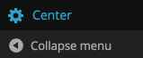
From Theme Options, you could:
- Import Demo Data to your website - Theme Options > Import Demo Data
- Export Demo Data - Theme Options > Export Current Data
- Setup Front Page - Theme Options > Front Page
- Setup Website Logo - Theme Options > General Settings > Logo
- Setup Fixed Sidebar or Floating Sidebar - Theme Options > Layout Settings
- Setup Social Media - Theme Options > Social Networks
- Setup the Colour and background for Website - Theme Options > Schemes
- Setup the fonts for Website - Theme Options > Font Settings
Included Files
- Javascript files
- Bootstrap 2.3.1 - styles/bootstrap.js - Some js for Bootstrap layout
- main.js - main js plugins: Waypoints v2.0.4, Flexslider v2.2, isotope, Modernizr 2.7.1, debouncedresize, DoubleTapToGo, imagesLoaded v3.1.6, SmoothScroll v1.2.1, Magnific Popup v0.9.9
- jquery.jplayer.min.js - js/jquery.jplayer.min.js - HTML5 media player plugin
- infographic.js - js/infographic.js - For infographic of pagebuilder, included: bar, Knob v1.2, animateNumbers
- jquery.countdown.min.js - js/jquery.countdown.min.js - For Count Down module of pagebuilder
- One Page Nav - js/jquery.onepagenav.js - Onepage navigation
- Queryloader v2 - js/jquery.queryloader2.js - Page loading
- Hoverdir v1.1.1 - js/jquery.hoverdir.js - Portfolio moudle of pagebuilder mouseover effect / mask
- carouFredSel 6.2.1 - js/jquery.caroufredsel.js - For Carousel
- Gray - js/jquery.gray.min.js - Portfolio moudle of pagebuilder, make the thumbnails gray
- theme.pagebuilder.js - functions/pagebuilder/js/theme.pagebuilder.js - Center pagebuilder main js
- custom.theme.js - js/custom.theme.js - Center theme main js
- CSS files
- Bootstrap 2.3.1 - styles/bootstrap.css - Bootstrap layout
- Center Pagebuild css - styles/pagebuild.css - Pagebuild layout and module style
- styles/magnific-popup.css - - Lightbox jquery plugin css
- style.css - style.css - Center theme main css
Once again, thank you for purchasing my theme. If you have any questions that are beyond the scope of this help file, please feel free to publish your question here.
Thanks,
uiueux studio